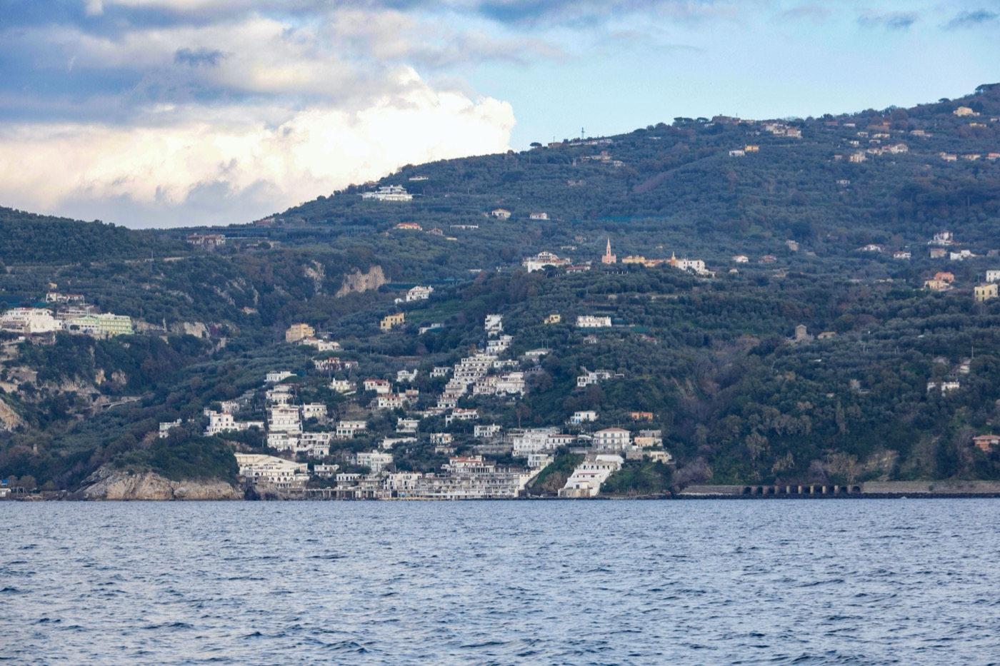

Moving to Jamaica in 2026
Crime is falling faster than anywhere in the region and a hurricane just erased a quarter of the country's GDP. Both are true, both are recent, and most guides mention neither.

Quick take
- The big oneHurricane Melissa (Oct 2025) cost 8 to 15 billion dollars, close to a quarter of GDP.
- SafetyImproving fast. 2025 was a 31-year low for murders. Advisory is still Level 3.
- Cost of livingA single professional in Kingston runs $1,265 to $2,215 a month.
- CurrencyEarn in USD and Jamaica is comfortable. Earn locally and it is not.
- Residency90 days visa-free, a 12-month remote-work permit, PR after 5 years.
- Before you buyAsk what the roof did in October 2025. It is now the only question that matters.
Jamaica exports its culture to the whole planet. Reggae, jerk, Usain Bolt, a way of moving through the world that people recognise on sight. Living there full time is a different proposition from visiting, and two things happened recently that almost nothing written about Jamaica has caught up with. One is very good news. The other reshaped the island.
What Hurricane Melissa changed
In late October 2025, Melissa hit Jamaica and did between $8 and $15 billion in damage and loss. Jamaica's entire annual economic output is around four times that. One storm cost the country close to a quarter of its GDP.
It affected more than 626,000 people, killed 45, and stripped the roofs off at least 120,000 buildings, most of them in the southwest. More than 100,000 homes were damaged.
The recovery has been real but uneven. Power and water were back to over 92% of customers within three months and most health facilities reopened. But in western Jamaica mobile medical units still fill access gaps, hospitals run beyond capacity, many families are still living under tarps, and a lot of hotels sit closed or barely operating in a country whose economy runs on tourism. A joint package from the IMF, World Bank, IDB, CAF and the Caribbean Development Bank is putting up to $6.7 billion into reconstruction over three years.
The builder's read
One line from the reporting should govern any purchase you make here: anything not built of steel and concrete was destroyed. That is the whole lesson, delivered at national scale, ten months ago.
So the question to ask about any Jamaican property is no longer about the kitchen. It is: what did this building do in October 2025? Was the roof lost and replaced, repaired, or untouched? If replaced, to what standard, and is there paperwork? Concrete slab roofs came through. Timber-framed and sheet-metal roofs largely did not.
Two knock-on effects worth pricing. Insurance in Jamaica is being repriced right now, and quotes you got a year ago are not indicative. And there is a national reconstruction boom underway with $6.7 billion behind it, which means builders are busy, materials are tight, and timelines are longer than normal. Get quotes in writing.
Is Jamaica safe?
This is the most-searched question about Jamaica, and the honest answer changed direction recently.
The headline first: the US State Department still rates Jamaica Level 3, Reconsider Travel, the most cautious rating of any major relocation island short of Haiti. That is the official position and we are not going to talk you out of taking it seriously.
But the numbers underneath it are moving faster than the advisory is.
Jamaica's violent crime decline
Jamaica Constabulary Force figures. Serious crime overall fell 19.5% in the first half of 2026, with shootings down 27.7% and robberies down 25%.
January 2026 was the lowest murder month Jamaica has recorded since national crime statistics began in 2001. That is not a good quarter. That is the best month in the entire dataset.
Two caveats that matter more than the averages. First, the decline is sharply uneven by parish, and several divisions actually recorded increases while the national figure fell. A national statistic tells you nothing about a specific address. Second, crime here has always been geographically concentrated, in parts of Kingston, Spanish Town, and inner-city Montego Bay, and it still is.
The practical rule has not changed even as the numbers improved: neighbourhood selection matters more in Jamaica than in almost any other Caribbean destination. Negril, the resort side of Montego Bay, and gated Kingston communities like Cherry Gardens are a different country from the divisions driving the statistics. Visit before you commit, and take the advice of people who live there over the advice of anyone selling you something.
What a month costs
A single professional in Kingston needs a realistic $1,265 to $2,215 a month. A digital nomad living lean lands near $1,240, someone living centrally with a bit of comfort around $1,630, and a family of three near $2,140.
| Item | Kingston, 2026 | Note |
|---|---|---|
| 1-bed, city centre | ~$700/mo | New Kingston, furnished, from $500 to $1,200 |
| 1-bed, outside centre | ~$350/mo | Cheaper, fewer services |
| Electricity | ~$0.29/kWh | Bills can double in a hot month with air conditioning |
| Fibre, 100 Mbps | ~$44/mo | Flow or Digicel, widely available in Kingston |
Two things to watch on the money. Inflation hit 6.7% in June 2026, a 29-month high and above the Bank of Jamaica's 4 to 6% target ceiling for the first time since early 2024, driven mainly by transport fares and food. Against that, the Jamaican dollar has been notably steady near J$158 to the US dollar all year, which is more stability than the region usually offers.
The decisive variable is your income currency. Local salaries are low relative to rent, so earning in USD, CAD, EUR or GBP is what makes Jamaica comfortable rather than tight. This is the single largest factor in whether people stay.
Visas & residency
As an English-speaking Commonwealth country, Jamaica's immigration process is relatively approachable:
- Visa-free entry of up to 90 days for US, Canadian, UK, and EU citizens, extendable through PICA (the Passport, Immigration & Citizenship Agency).
- Remote-work permit, a 12-month, renewable option available to US passport holders.
- Permanent residency after five years of continuous residence; retirement residency for those who can prove sufficient income; marriage residency for spouses of Jamaicans.
- Citizenship by naturalization after 5+ years as a permanent resident; dual citizenship is permitted.
Apply for residency through a Jamaican consulate while still in your home country if you can, processing takes several months and approval isn't guaranteed, so don't put down roots until your status is secure.
Taxes in Jamaica
You're tax-resident if you spend 183+ days in a calendar year in Jamaica, or simply keep a home available on the island, in which case Jamaica taxes your worldwide income; non-residents are taxed on Jamaican-source income only. Resident income tax is progressive, starting at 25% and rising to 30% above a higher-income threshold, with a tax-free personal allowance below it. Unlike Barbados's remote-work visa, Jamaica does not blanket-exempt foreign income for residents, so confirm your position with Tax Administration Jamaica (TAJ) or a cross-border accountant before relocating.
Buying property & real estate
Foreigners can buy property in Jamaica, and the real-estate market is active (though unequal by area). As with anywhere, use a local attorney for title and due diligence. Many expats rent first to learn the neighborhoods, then buy or build once they know where they want to be, a sensible sequence given how much location drives both safety and cost here.
Healthcare after a storm year
Jamaica runs a two-tier system. Public hospitals provide low-cost care but are often overcrowded; private hospitals and clinics, concentrated in Kingston (University Hospital of the West Indies) and Montego Bay (Cornwall Regional), offer shorter waits and better facilities at higher out-of-pocket cost. Specialist and trauma care is centered on those two cities, and complex cases sometimes travel abroad. Private international health insurance (roughly $200–$500/month range) is considered essential for expats.
Where people settle

- Kingston (Liguanea, Cherry Gardens, New Kingston), business, universities, culture, the best hospitals; gated communities favored by expats.
- Montego Bay, resorts, an international airport, a lively expat network with easy beach and healthcare access.
- Ocho Rios, a slower coastal pace with a tight-knit community, still near entertainment and dining.
- Port Antonio, lush, laid-back, and distinctly local for a nature-oriented lifestyle.
Is Jamaica right for you?
- Great fit if: you earn in a hard currency, want an English-speaking Caribbean base with world-famous culture, and will invest in the right neighborhood and private health cover.
- Think twice if: safety anxiety would dominate your daily life, you need low costs on a local income, or you want a turnkey, low-friction move, Jamaica rewards planning and local knowledge.
120,000 roofs came off in one night. Ask what yours is made of
Melissa sorted Jamaica's building stock into what survived and what did not, and the dividing line was concrete. SORA designs and builds homes across the tropics, with our deepest roots in Panama and Costa Rica, where residency is straightforward and building costs a fraction of the coastal Caribbean. If the move is really about a place of your own in the sun, it is worth seeing what a fixed-price build looks like before you commit to any one island.
Frequently asked questions
Is Jamaica safe to live in?
Jamaica has real crime challenges concentrated in specific urban areas (parts of Kingston, Spanish Town, inner-city Montego Bay), but expats who choose secure neighborhoods, stay street-smart, and often use private drivers generally report feeling comfortable. Tourist and expat zones like Negril, resort-side Montego Bay, and gated Kingston communities are generally safe. Neighborhood selection matters more here than in most Caribbean destinations.
How much does it cost to live in Jamaica?
Costs vary by location. A one-bedroom in Kingston or Montego Bay runs about JMD 60,000–120,000 (~$400–$800) per month; outside the centers it's lower. A comfortable single budget is roughly $1,100–$1,500/month. Because local salaries are low relative to rent, expats earning in USD, CAD, EUR, or GBP are strongly advantaged.
What visa do I need to move to Jamaica?
US, Canadian, UK, and EU citizens can enter visa-free for up to 90 days (extendable via PICA). US passport holders can use a 12-month renewable remote-work permit. Permanent residency is available after five years of continuous residence, with retirement and marriage routes also available. Apply through a Jamaican consulate from your home country, as processing takes months.
Does Jamaica tax foreign income?
If you become tax-resident (183+ days in a calendar year, or by keeping a home available on the island), Jamaica taxes your worldwide income; non-residents are taxed only on Jamaican-source income. Resident income tax is progressive, starting at 25% and rising to 30% above a higher-income threshold, with a tax-free personal allowance below it. Jamaica does not broadly exempt foreign income for residents the way some remote-work visas do, so get advice from Tax Administration Jamaica (TAJ) before relocating.
Can foreigners buy property in Jamaica?
Yes, foreigners can buy property in Jamaica. Use a local attorney for title and due diligence. Many expats rent first to learn the neighborhoods, where safety and cost vary widely, then buy or build once they know where they want to settle.
Sources & verification
Figures in this guide were checked against primary and authoritative sources on 27 July 2026. Immigration, tax, and cost figures change, so always confirm the current rules with the official body or a licensed professional before acting.
- PICA, Passport, Immigration & Citizenship Agency · official permanent-residence categories & process
- Tax Administration Jamaica (TAJ) · official income-tax authority; residence & rates
- US State Department, Jamaica · Level 3 travel advisory (Reconsider Travel)